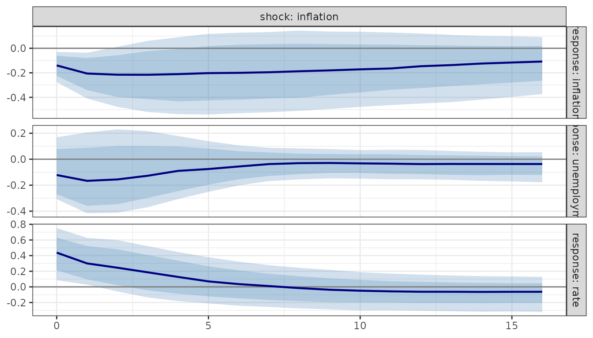

Reduced-form innovations satisfy
with
.
An identification scheme chooses
.
Each id_*() constructor returns a small specification
object passed to the id argument of irf(),
fevd() and hd(), for both varm
and bvarm fits.
Implemented: id_chol(), id_longrun(),
id_sign(), id_given().
Proxy/external-instrument SVAR is covered in the last section.
Cholesky (recursive)
The first variable in order is the most exogenous.
Variables can be given by name.
ir1 <- irf(fit, id = id_chol(), horizon = 12, nboot = 200)
ir2 <- irf(fit, id = id_chol(order = c("rate", "inflation", "unemployment")),
horizon = 12, ci = "none")
round(ir1$estimate[, , 1], 3) # impact matrix P (response x shock)
#> shock
#> response inflation unemployment rate
#> inflation 0.308 0.000 0.000
#> unemployment -0.012 0.332 0.000
#> rate 0.088 -0.268 0.715
plot(ir1)
Long-run restrictions (Blanchard-Quah)
The cumulative long-run response matrix is restricted to be lower triangular, so the second shock has no long-run effect on the first variable, and so on. Variables should be stationary growth rates or differences, and the ordering is the column order of the data. Here we use the sample series purely to show the mechanics.
ir_lr <- irf(fit, id = id_longrun(), horizon = 40, ci = "none")
ir_lr
#> <varm IRF> K = 3, horizon 0..40, id = longrun
# long-run effect: cumulative responses over a long horizon are lower triangular
ir_long <- irf(fit, id = id_longrun(), horizon = 2000, ci = "none")
round(apply(ir_long$estimate, c(1, 2), sum), 2)
#> shock
#> response inflation unemployment rate
#> inflation 11.96 0.00 0.00
#> unemployment 5.02 3.08 0.00
#> rate 14.08 2.77 7.41Use cumulative = "unemployment" in irf() to
accumulate the response of a differenced variable into a level
response.
Sign restrictions
restrictions is a
matrix (rows: variables, columns: shocks) with entries +1,
-1 or 0 (unrestricted). A matrix is imposed
over horizon periods from impact; a
array gives horizon-specific restrictions. Draws use Haar-distributed
rotations of the Cholesky factor (Rubio-Ramirez, Waggoner and Zha,
2010); nrot accepted rotations are kept per reduced-form
draw, up to maxtry attempts. Only sign restrictions are
supported; zero restrictions are not.
A stylised monetary-policy shock: the rate rises, inflation does not rise. The other two shocks are left unrestricted.
S <- matrix(0, 3, 3, dimnames = list(c("inflation", "unemployment", "rate"),
c("mp", "s2", "s3")))
S["rate", "mp"] <- 1
S["inflation", "mp"] <- -1
id_sign(S, horizon = 2) # printing an id object shows the restrictions
#> <varm_id> sign restrictions (2 at impact; 2 horizons)
#> + positive, - negative, · unrestricted; rows = variables, cols = shocks
#> rotations: 1 per draw, max 1000 tries
#> mp s2 s3
#> inflation - · ·
#> unemployment · · ·
#> rate + · ·
#>
#> unrestricted shocks: s2, s3
ir_sign <- irf(fit, id = id_sign(S, horizon = 2, nrot = 5, maxtry = 5000),
horizon = 16, nboot = 100)
ir_sign
#> <varm IRF> K = 3, horizon 0..16, id = sign, bands: 68%/90%
#> sign-restriction acceptance rate: 0.325The estimate is the median across accepted rotations;
for varm fits the sample-based set estimate is stored in
$set_estimate. The acceptance rate is
ir_sign$accept_rate. If no draw satisfies the restrictions,
irf() stops with an error. Sign restrictions identify a
set, so the pointwise median is not one coherent model;
hd() for a varm fit uses the first accepted
rotation at the point estimate.
plot(ir_sign, shocks = 1)
Proxy SVAR and weak-instrument-robust sets
varm_proxy() identifies one shock with an external
instrument
(Mertens-Ravn, Stock-Watson): the impact vector is proportional to
,
normalised so the target variable moves by
size. Wild-bootstrap bands are unreliable when the
instrument is weak, so varm_proxy_robust() computes the
Montiel Olea-Stock-Watson (2021) Anderson-Rubin-type confidence sets,
valid at any instrument strength. Each set is bounded (case
1), the complement of an interval (2), empty (3) or the whole line (4);
unbounded sets are reported as -Inf/Inf and
empty ones as NA. proxy_fstat() reports the
HAC Wald first-stage statistic F_hac that governs which
case to expect.
set.seed(1)
e <- matrix(rnorm(600), 300)
y <- matrix(0, 300, 2, dimnames = list(NULL, c("y1", "y2")))
for (t in 2:300) y[t, ] <- 0.5 * y[t - 1, ] + c(e[t, 1] + 0.3 * e[t, 2], e[t, 2] + 0.5 * e[t, 1])
pfit <- varm(y, p = 1)
m <- e[, 1] + rnorm(300, sd = 0.5) # relevant instrument for shock 1
proxy_fstat(pfit, m)
#> F F_robust F_hac
#> 692.2304 709.8430 155.4270
rb <- varm_proxy_robust(pfit, m, horizon = 6, level = c(0.68, 0.90))
rb
#> <varm_proxy_robust> Montiel Olea-Stock-Watson sets, shock to y1 (size 1), horizon 0..6; levels 0.68, 0.9
#> HAC first-stage F = 155.4
#>
#> normalised bounded
#> 2 26
round(cbind(est = rb$estimate[, "y2"], lower = rb$lower[, "y2", 2], upper = rb$upper[, "y2", 2]), 3)
#> est lower upper
#> 0 0.542 0.445 0.635
#> 1 0.212 0.104 0.320
#> 2 0.080 -0.011 0.172
#> 3 0.029 -0.033 0.091
#> 4 0.010 -0.028 0.047
#> 5 0.003 -0.019 0.024
#> 6 0.001 -0.011 0.012
# a pure-noise instrument: the sets become unbounded
varm_proxy_robust(pfit, rnorm(300), horizon = 3, level = 0.9)$case[, , 1]
#> y1 y2
#> 0 0 4
#> 1 4 4
#> 2 4 4
#> 3 4 4